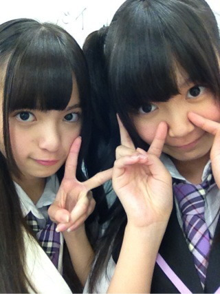

| 2012/06 04 Mon | ひめたん(* ゝω・*)ノ その159 |
 ひめたんにリクエストしても良い?俺あしゅりんも好きやねんけど
ひめたんにリクエストしても良い?俺あしゅりんも好きやねんけど
あしゅりんとのツーショット撮ってブログにのしてくれへん?
はーい(^^)/"
リクエストにお答えして、あしゅー。

今日はお仕事行ってきました＼(^O^)／
みんなに会うの久しぶりな気がするよー全握おらんかったけえね。
近々、何らかの形でひめたん登場しますーお楽しみに♪
アンケート回答ありがとうございます(^ω^)
どこで生まれたのー?
病院ー。
そんなん知っとるわ!わら
いいねーいろんなエピソードまでご丁寧にありがとーう(^^)
ちなみにひめたんはー
市電の見える広島の病院で生まれたのね。
ままいわく、春のあったかい日(*^^*)
んー広島懐かしいね。
今週行くからねーみんな待っとってーな!
それじゃ今日の質問。
1.ひとりっこ
2.長子
3.中間子
4.末っ子
あなたはどーれ?
ちなみにひめたんは3の中間子。姉さんと妹がおるよー＼(^O^)／
 ひめたんは習い事始めるなら何がしたい??
ひめたんは習い事始めるなら何がしたい??
お料理教室(*^^*)!
女子力あっぷのためにねー大事だよね。
バレンタインとか、毎年超ラッピングにこだわって超可愛くしてみるけど
実際凝ったもの作れない子、クラスにおらんかったー?
そんな子おったよね。
中元さんもご両親や周りの感謝してますか?
もちろんもちろん(ω)
中元さんはいろんな人にお世話になって、迷惑かけたからね
こうやって楽しくアイドルできるのも、こうやって楽しく高校生できるのも、
家族やみなさんのサポートのおかげなの。
でも、恥ずかしいから、いつも感謝してるって言ったりしない...。
うし。この場を借りて改めて
いつもありがとーうございます!
これからも頑張ります(^^)
 今のひめたんのマイブームはなに?
今のひめたんのマイブームはなに?
最近ジムに行ってみたのー。
これが楽しくて(*^^*)
テレビでよく見るトレーニングマシンがいっぱい使えるの。
決めた。
この夏はジム通う!筋肉むきむきのまっちょアイドルになってやるー!
ひめたんの周りに双子の知り合いおる?笑っ
そういや身近にはおらんかもー
年子ちゃんならよく聞きますけれどもね♪
 お菓子のメーカーで好きなのはある?
お菓子のメーカーで好きなのはある?
ちょこれいとーはーめっいーじ♪
ぶっちゃけお菓子なら何でも好き(*^^*)笑
 ひめたんは広島おるとき[とうかさん]行ってたー??
ひめたんは広島おるとき[とうかさん]行ってたー??
行ってたならとうかさんエピソード教えてくださいなp(^-^)q
とうかさん毎年行っとったよー♪
広島の子はみんなとうかさんで浴衣解禁するの。
いいなーとうかさん行きたくなってきた!
屋台でぜったい食べるのある?
てっぱんだけど、かき氷ー
いちご味ね。シロップ多めで練乳があるとなおテンション上がる。
あとはいっつもりんごあめ買うんだけど、
結局食べきれんで最後誰かにあげるー('`)
獅子舞わかる?でたことある?(゜_゜>)
獅子舞わかるけど、見たことあるけど、で、でるー?
獅子舞の中に人なんていなーいわら
...いやあーかっくいいですよねー獅子舞。
頭とか重たそう('・・`)
 中元日芽香＆伊藤万理華コンビのコンビ名を考えるとしたら何?
中元日芽香＆伊藤万理華コンビのコンビ名を考えるとしたら何?
「なかいさん」。
命名:
ねねころ
(伊藤寧々chan)、マネージャーさん
 最近乃木坂メンバー内で流行っていることは?
最近乃木坂メンバー内で流行っていることは?
「くたばれ(*'ω`*)」て超可愛くいう。
かわいくね。がちで言っちゃだめだよ?ー
乃木ここの
あしゅりん
(齋藤飛鳥chan)風ー
(*´・ω・*)ひめたん
コメント(129)
2012/06/04 00:48